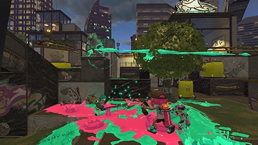
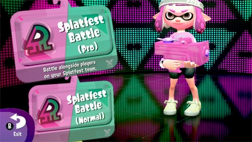
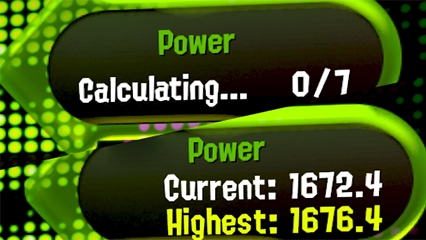
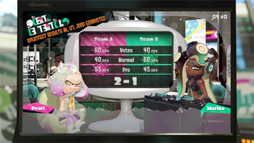

Splatfest Battle

Splatfest Battles are special theme-based Turf War events where two opposing teams duke it out for supremacy.
Splatfest Points are awarded based on the battle results, and gathering Splatfest Points will raise your Splatfest rank!
At the end of each Splatfest, participants are awarded Super Sea Snails according to their rank and team.
Splatfest Battles have two modes - "normal" and "pro"!
Splatfest Points are awarded based on the battle results, and gathering Splatfest Points will raise your Splatfest rank!
At the end of each Splatfest, participants are awarded Super Sea Snails according to their rank and team.
Splatfest Battles have two modes - "normal" and "pro"!
Normal Mode

You can jump into a normal Splatfest Battle on your own or join up with 1-3 friends from the same Splatfest team.
In this mode, the amount you inked is added to any win bonus you get to determine your clout.
If your team is on a win streak, the game will try and match you against teams with a similar streak.
In this mode, the amount you inked is added to any win bonus you get to determine your clout.
If your team is on a win streak, the game will try and match you against teams with a similar streak.
Pro Mode

Pro mode is for those who want to go solo and push themselves to the limit.
In pro mode, you're judged on your "Splatfest Power". Raise it high enough and you could make it into the Splatfest Top 100!
In this mode, you increase your clout by beating the opposing team. You get more clout for beating teams with a higher Splatfest Power.
In pro mode, you're judged on your "Splatfest Power". Raise it high enough and you could make it into the Splatfest Top 100!
In this mode, you increase your clout by beating the opposing team. You get more clout for beating teams with a higher Splatfest Power.
Final Results

The final Splatfest results are decided based on three factors: Votes, clout from normal-mode players, and clout from pro-mode players.
Even if your side loses the popularity contest, normal and pro-mode victories can slowly but surely turn the tables!
Participants on the winning side will receive slightly more Super Sea Snails as a reward for their victory!
Even if your side loses the popularity contest, normal and pro-mode victories can slowly but surely turn the tables!
Participants on the winning side will receive slightly more Super Sea Snails as a reward for their victory!